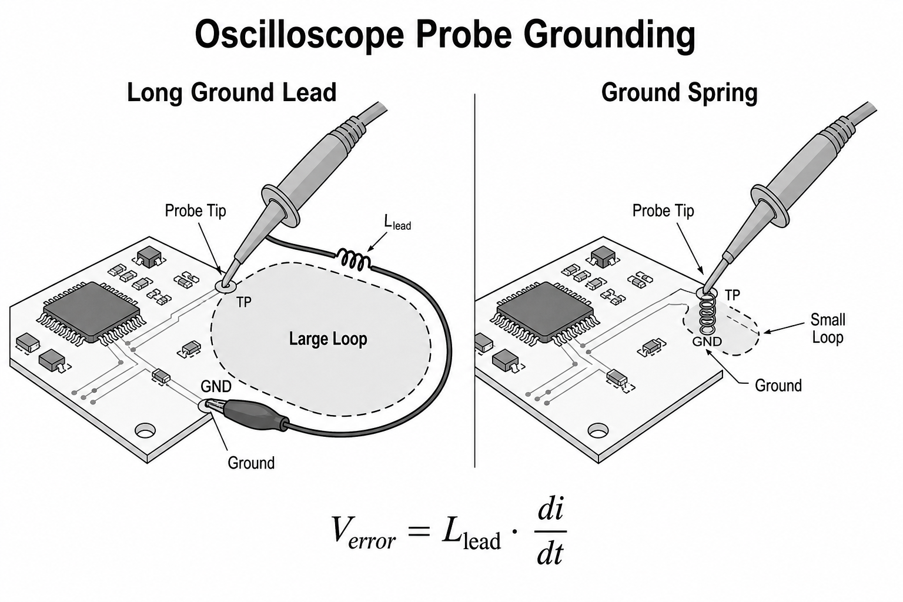

프로브는 신호를 구경만 하는 창문이 아니라, 측정점에 R·C·L을 붙이고 주변 field를 받는
회로 부품이자 안테나다.
passive 10× probe는 보통 높은 resistance와 수 pF~수십 pF input capacitance를 갖는다.
probe tip에서 scope BNC까지 cable과 compensation network가 frequency response를 맞춘다.
긴 ground clip은 loop inductance와 pickup area를 키워 ringing과 noise를 만들 수 있다. 측정
대상의 source impedance와 edge가 빠를수록 loading을 더 엄격히 본다.
프로브가 더하는 항
Iprobe = Cin·dv/dtedge에서 빼앗는 전류
fring ≈ 1/(2π√LC)ground L와 input C 공진
XL = 2πfLground lead impedance
Zin ≈ Rin∥1/(jωCin)주파수 의존 loading
10 MΩ은 DC 사양일 뿐 high frequency 입력 impedance는 C가 지배한다. 10 pF는 100 MHz에서
약 159 Ω이다. 낮은 capacitance active probe는 fast/high-impedance node에 유리하지만 허용
voltage, offset range, common-mode range와 가격 trade-off가 있다.
LAB 14
ground lead 길이와 가짜 ringing
ground inductance와 probe capacitance가 만드는 공진을 비교한다.
ground L 근사 100 nH공진 159 MHz신뢰도 낮음
DRAW 14
ground clip과 spring ground의 차이
측정 루프의 면적과 lead inductance가 DUT에 없던 전압을 만든다.

긴 lead에는 Verror=Llead·di/dt가 생기고 큰 고리는 주변 magnetic field를 더 많이 받는다.
같은 probe로 위치만 바꿔 재측정하는 A/B 비교가 진짜 ringing과 측정 artifact를 가르는 빠른 방법이다.
3D 14
probe loop area를 입체로 확인하기
측정점과 ground 접점을 회전해 보며 loop가 외부 자속을 끌어안는 면적을 확인한다.
loop는 선 하나가 아니라 tip에서 DUT를 지나 ground lead로 돌아오는 폐곡선이다. tip과 ground를
함께 가까이 두어야 loop inductance와 pickup을 동시에 줄인다.
원리 더 깊게
프로브 선택은 impedance·범위·안전의 동시 최적화다
Passive 10×
견고하고 범용적이지만 input C와 ground loop가 high-impedance fast node를 크게 바꿀 수 있다.
Active single-ended
낮은 Cin과 넓은 BW가 장점이지만 dynamic range, offset range, ESD 내성과 tip accessory를 확인한다.
Differential
두 입력의 차를 읽지만 CMRR은 주파수와 skew에 따라 감소한다. differential·common-mode limit을 모두 지킨다.
Current
clamp의 transfer impedance, bandwidth, DC offset, core saturation과 conductor 위치가 결과를 바꾼다.
differential probe의 두 입력 경로에 delay 차 Δt가 있으면 큰 common-mode edge VCM의 일부가
대략 Verror≈Δt·dVCM/dt로 differential 출력에 나타난다. DC CMRR 숫자가 좋아도 빠른
switching node에서 오차가 커질 수 있으므로 frequency-domain CMRR과 최대 dv/dt 사양을 본다.
안전은 측정 정확도보다 먼저다. 일반 bench scope의 ground는 보호접지와 연결돼 있을 수 있다.
입력 category, working voltage, transient rating, creepage와 isolation architecture를 모르면
mains/primary 또는 high-side switch node에 연결하지 않는다.
손으로 푸는 예제 · 10 cm ground clip
wire inductance를 1 nH/mm로 거칠게 보면 100 mm clip은 약 100 nH다. probe input 10 pF와의
공진은 1/(2π√(100 nH·10 pF)) ≈ 159 MHz다. 1 ns edge에는 이 대역의 에너지가 충분해 ringing이
보일 수 있다. 같은 probe를 5 mm spring ground로 바꾸면 L≈5 nH, 공진은 약 712 MHz로 올라가고
loop area도 크게 줄어든다.
상식 점검: ground lead를 짧게 하면 L이 줄고 공진 주파수는 올라가야 한다.
측정 가능한 PCB
test point는 접근성만이 아니라 signal integrity와 ground 접근을 함께 설계한다. rail decoupling
capacitor 옆에 tip과 spring ground가 닿는 작은 pad pair를 두고, differential pair에는 고속
probe용 footprint가 만드는 stub를 검토한다. current shunt는 저항값, power, Kelvin sense,
amplifier common-mode range와 bandwidth를 함께 정한다.
프로브 선택과 안전
passive probe는 보편적이고 robust하며, active probe는 낮은 Cin으로 fast node에 유리하다.
differential probe는 두 점의 차를 읽지만 differential voltage와 각 입력의 common-mode voltage
limit을 모두 지켜야 한다. current probe는 DC/AC 범위와 core saturation, degauss를 확인한다.
mains/primary 측정은 장비 category, 절연, creepage와 교육된 절차가 필요하다.
중대 안전 경보
“일반 접지형 scope의 ground clip을 아무 점에나 연결해도 된다.”
bench scope의 BNC outer와 probe ground는 보호접지에 연결된 경우가 대부분이다. hot node에
ground clip을 연결하면 그 점을 earth에 단락해 회로·프로브·사용자를 위험하게 할 수 있다.
보호접지를 제거하거나 cheater plug로 scope를 띄우지 않는다. 적절한 differential/isolated
instrument와 안전 절차를 사용한다.
셀프 체크
10 MΩ probe가 고주파에서 10 MΩ이 아닌 이유는?
input capacitance의 reactance가 주파수와 함께 낮아져 저항과 병렬로 지배하기 때문이다.
spring ground의 두 가지 장점은?
loop inductance와 외부 magnetic pickup area를 동시에 줄인다.
differential probe에서 확인할 두 voltage limit은?
두 입력 사이 differential limit과 각 입력이 ground에 대해 가질 수 있는 common-mode limit이다.